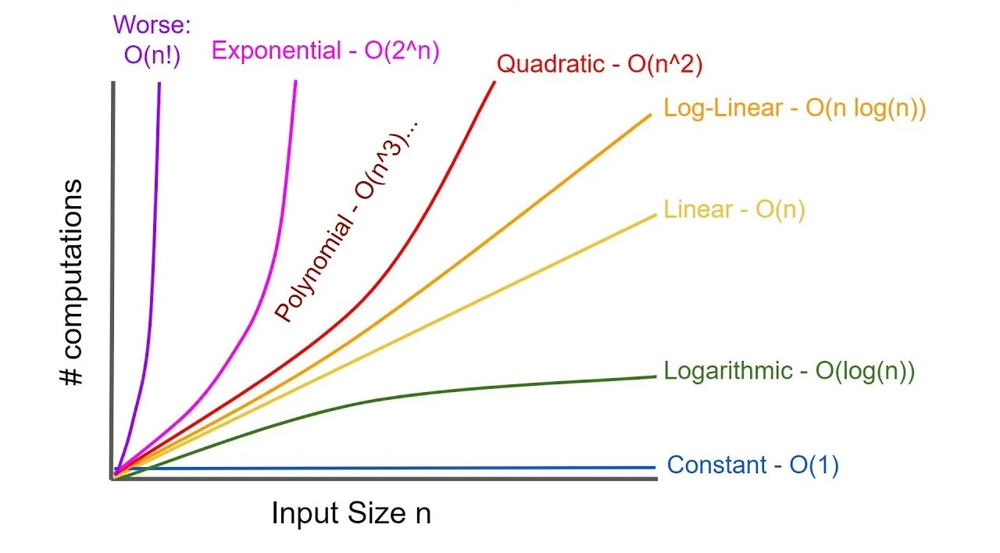
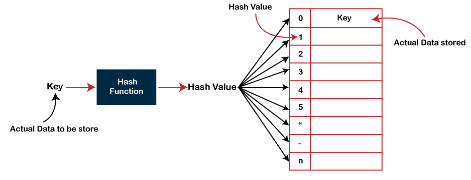

Languages like Ruby or PHP (and the frameworks built on top of them) get a lot of flack for lacking performance, because they are interpreted languages, and in some sense it’s true, they do come with performance problems. For example, C# is about ten times as fast when compared to PHP for CPU intensive things like sorting, compression etc. But that doesn’t matter. The reason it doesn’t matter is that if you profile your API, you will see that most of the CPU time is being spent in native code, for example doing database queries. In fact, a good rule of time is to think that your API execution processes will spend 90% of time running SQL queries, so optimized queries are crucial.
From experience, most modern APIs will use some sort of ORM, which is perfectly fine. Perfectly fine, until some query have performance issues, that is. Something I’ve seen over and over in my career is code becoming slower and slower as database size is increasing.
Your queries will work fine on small databases. It’s only until
The O(n) Notation
This is something that sometimes comes up in interviews. To be honest, initially I didn’t find much use for knowing about it, because let’s be honest, most developers don’t write their own sorting algorithms.
But the more I spent time coding, I realized that you need to understand how the code that you are using works - meaning the underlying algorithms. This is especially true when it comes to database performance.
async function f(n: number) {
for (let i = 0; i < n; i++) {
for (let j = 0; i < n; j++) {
for (let k = 0; k < n; k++) {
await sleep(10)
}
}
}
}
This Typescript function has O(n^3) complexity, for example, so the execution time will increase much faster than linear.
Understanding Hashtables
Before we look at various algorithms, we must understand how hashtables work.
A common data structure is a linked list.
Of course, finding something would require parsing the whole list, which gives us O(n) complexity, on average.
Here’s where the concept of a has table (or dictionary comes into play). We would like
We do know that arrays have a O(1) complexity, meaning that if we know the index of a certain item, we can go directly to that item in the array.
Again, very few developers are actually writing their own hashtables. But we need to be aware of how they work under the hood.
Similarly, an SQL query spanning three tables, in the absence of indexes and optimizations will be of O(n^3) complexity.
Improving Query Performance
Join algorithms are a set of data processing techniques used to combine rows from two or more tables based on a specific join condition. These algorithms are crucial for database operations, enabling the retrieval of relevant data from multiple tables. Common join algorithms include:
Join algorithms are a set of data processing techniques used to combine rows from two or more tables based on a specific join condition. These algorithms are crucial for database operations, enabling the retrieval of relevant data from multiple tables. Common join algorithms include: Nested Loop Join: The most straightforward join algorithm, where each row from the outer table is compared against all rows in the inner table until a match is found. This algorithm is simple but inefficient for large datasets, as it involves multiple scans of the inner table for each outer row.
-
Sort-Merge Join: An efficient join algorithm that relies on both tables being sorted on the join attributes. It first sorts the two tables independently and then merges them together, matching rows based on the join condition. This algorithm is effective for large datasets as it eliminates the need for multiple scans of the inner table.
-
Hash Join: An alternative approach that utilizes hash tables to organize and match rows from the two tables. It creates a hash table for one table, inserts the corresponding join attributes from the other table into the hash table, and then retrieves matching rows from the hash table for each row in the first table. This algorithm is particularly efficient for large datasets and can outperform both nested loop and sort-merge joins.
-
Block Nested Loop Join: A variation of nested loop join that partitions the inner table into smaller blocks, enabling more efficient processing of large datasets. It processes the outer table row by row, performing nested loop join operations with each block of the inner table. This algorithm balances the processing workload and reduces the number of scans of the inner table compared to standard nested loop join.
-
Symmetric Hash Join: A variant of hash join that utilizes hash tables for both tables, making it suitable for queries where the join condition involves multiple columns. It creates hash tables for both tables, inserts join attributes from both tables into the corresponding hash tables, and then retrieves matching rows from both tables. This algorithm is efficient for complex join conditions and can handle large datasets effectively.
The choice of join algorithm depends on various factors, including the size and structure of the tables, the join condition, and the available memory resources. Nested loop join is simple but inefficient for large datasets, while sort-merge join is more efficient but requires both tables to be sorted. Hash join offers superior performance, especially for large datasets, but it also consumes more memory. Block nested loop join balances processing and memory requirements, while symmetric hash join is suitable for complex join conditions.
*The optimizer will *
If All Else Fails
If you’ve tried optimizing your query and it’s still slow, consider something this:
- Star schemas are much better for complex reports, don’t hit your production database.
- You might want to use paging or lazy loading in your frontend, and do multiple requests / load child data on demand.